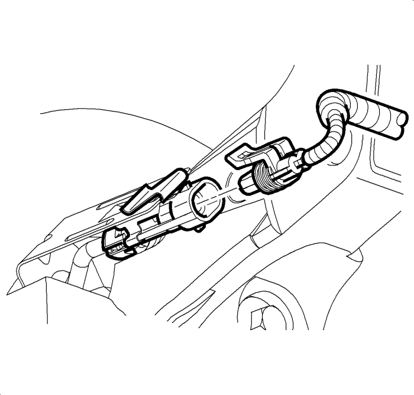

Sustitución del cubo y cojinete de la rueda delantera
Procedimiento de desmontaje
- Elevar el vehículo y soportarlo de manera segura. Consultar Elevación del vehículo con un gato .
- Desmonte el conjunto de llanta y neumático delantero. Consultar Desmontaje y montaje de la rueda y el neumático .
- Desmonte el rotor de freno delantero. Consultar Sustitución del rotor de freno delantero .

- Desmonte el conjunto del sensor de velocidad de la rueda de la mangueta, si dispone de ello. Consultar Sustitución del sensor de velocidad de las ruedas delanteras .
Nota: Apoye el eje de accionamiento de la rueda con un cable mecánico grueso o equivalente.
- Extraiga la tuerca del eje de accionamiento de la rueda. Consultar Sustitución del semieje de la rueda delantera .

- Desmonte los pernos de montaje del cojinete/cubo de la rueda .
- Desmonte el conjunto del cubo/cojinete de la rueda en la mangueta.
Procedimiento de montaje
- Monte el conjunto del cubo/cojinete de la rueda en la mangueta.
- Con un limpiador aprobado, extraiga el antiguo producto de sellado para roscas de los pernos.
Nota: Deje que el producto de sellado para roscas se endurezca durante unos 10 minutos antes del montaje.
- Aplique producto sellador para roscas en 2/3 partes del perno. Consultar Adhesivos, líquidos, lubricantes y selladores .
- Extraiga el cable mecánico del eje de accionamiento de la rueda.
Precaución: Consulte Precaución con las fijaciones en la sección Prólogo
- Monte los pernos del cojinete/cubo de la rueda y apriételos a 115 N·m (85 lib. pie).
- Monte la tuerca del eje de accionamiento de la rueda. Consultar Sustitución del semieje de la rueda delantera .
- Monte el conjunto del sensor de velocidad de la rueda en la mangueta, si dispone de ello. Consultar Sustitución del sensor de velocidad de las ruedas delanteras .
- Monte el rotor de freno delantero. Consultar Sustitución del rotor de freno delantero .
- Monte el conjunto delantero de neumático y llanta. Consultar Desmontaje y montaje de la rueda y el neumático .
- Bajar el vehículo.
| © Copyright Chevrolet Europe. All rights reserved |